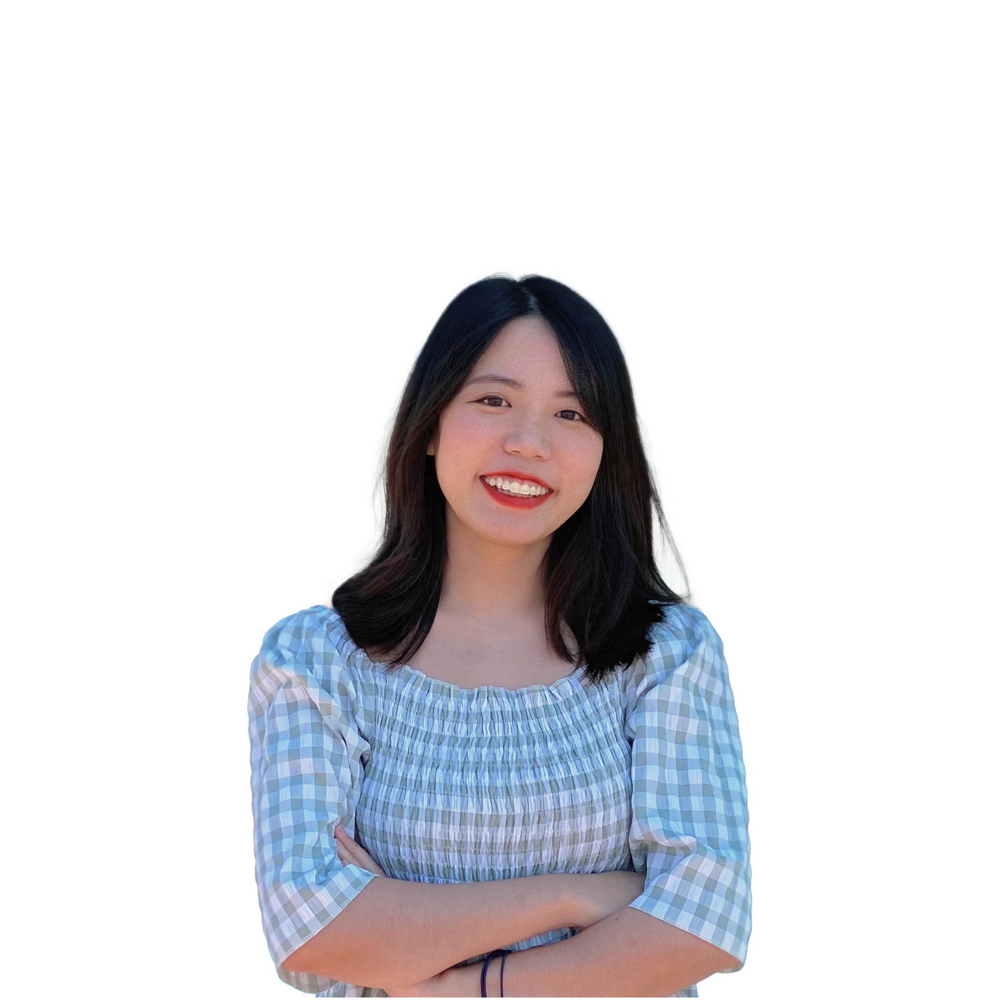

Email: ariauyenhuynh@gmail.com
Sunnyvale, CA
Bio
Currently working in the San Francisco Bay Area, Uyen Huynh is a digital media artist born and raised in Vietnam.
She works across a range of digital media, including design, videography, photography, 3D modeling, and digital illustrations to create immersive and interactive experiences exploring Vietnamese culture and identity.
She is also particularly interested in exploring the gaming field and creating interactive characters and experiences.
She is a new graduate at San Jose State University and her work is also exhibited on New Art City.
Artist Statement
As an emerging artist, I enjoy working with diverse digital media ranging from video editing, motion graphics, coding, and three-dimensional modeling. I desire to take photos and videos and edit them to document my life. I also enjoy creating personal works for those who are close to me. My work often draws upon a minimalist and cartoon aesthetic.
I focus on creating engaging experiences and interactive works that are relatable and provocative.
My aspiration in creating art is to create immersive experiences exploring its power in the conveyance of my Vietnamese culture, an expression of my personality.